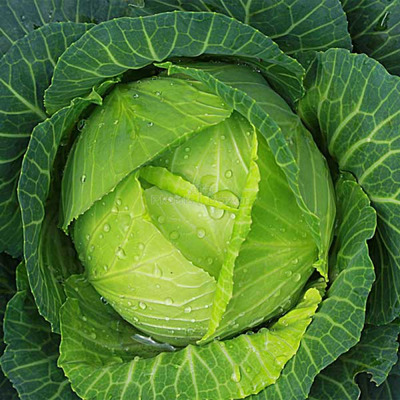

Cabbage
Cabbage, (Brassica oleracea), vegetable and fodder plant of the mustard family (Brassicaceae), the various agricultural forms of which have been developed by long cultivation from the wild cabbage (Brassica oleracea). The edible portions of all cabbage forms—which include kale, broccoli, and Brussels sprouts—are low in calories and are an excellent source of vitamin C. Head cabbage, generally designated simply “cabbage,” is a major table vegetable in most countries of the temperate zone.
All forms of cabbage have succulent leaves that are free of hairs and covered with a waxy coating, which often gives the leaf surface a gray-green or blue-green colour. The plants grow best in mild to cool climates and tolerate frost; some forms tolerate hard freezing at certain periods of growth. Hot weather impairs growth and quality.
Head cabbage is one of the most economically significant forms of the plant. Hard-headed cabbage was developed in northern Europe during the Middle Ages, and soft-headed cabbages, such as savoy, are believed to have originated earlier in southern Europe. The heads of horticultural varieties of head cabbage range in shape from pointed through globular to flat; from soft to hard in structure; through various shades of green, gray-green, and magenta or red; and from less than 1 kg to more than 3 kg (2–7 pounds) in weight. The less-hard varieties must be used more or less promptly after harvest for salads, in cookery, or for the manufacture of sauerkraut, whereas the very hard late-maturing Danish type is suited to winter storage.